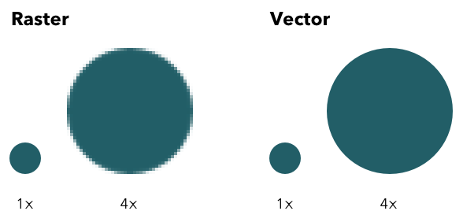

Hva er SVG?
SVG eller "Scalable Vector Graphics" er bildekode som brukes til å forklare 2d grafikk og grafiske løsninger i XML. Siden formatet kan benyttes av XML betyr det at det er et tekstbasert bildeformat. Noe som gjør at vi kan lese koden til bildet.
I koden til SVG grafikk kan vi gjøre endringer på størrelse, farger etc. uten å miste kvaliteten.
